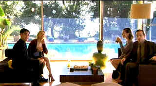

| Anniverary Party (SE)/ B, B |
| New Line/2001/115/ANA 1.85 |
It's a wonderful ensemble performance
movie, but The Anniversary Party is limited by a thin script that
doesn't always ring true. There are a lot of characters woven into the
narrative. They have some fine opportunities to show off their acting;
there seems to be some effective improv included and the actors are
terrific right across the board.
After a separation in their stormy marriage, Joe
and Sally have recently reunited. To celebrate their sixth anniversary, a
party is in order. Parties are by nature entertaining and this one's no
exception. The variety of friends and current situations makes for solid
interaction. Perhaps one of the problems, if you deem it a problem,
is that the central characters, Joe and Sally are not particularly
appealing. You can turn that into a compliment because the characters are
what they are; they are not candied coated versions. They are certainly
neither perfect nor plastic. But, at he same time, their inability to
curry audience sympathy makes it difficult to enjoy the film to the max.
|
 |
|
The dog-loving neighbors.
©New Line
|
The flow of the film feels spotty. There are
times when you are completely engrossed in the characters and other times
when it bellies out and drags There are many good moments, but the scene
that played most powerfully, touching on an extraordinary raw nerve of
truth, is when Sophia Gold suggests to Sally that she may be making a
mistake and then inadvertently opens up to Sally. It's a very real
moment.
The dog sub-plot is very funny. Like so many
people, I have experienced problems with neighbors complaining about our
dog's barking. In fact, our lovely neighbors took us to Village Court and
all sorts of restrictions were placed on our dog. It was a royal
pain. Some of the pent-up tension that exists is funny and accurate. On
the other hand, I don't think that Joe and Sally would have invited the
neighbors to their party, regardless of business manager's advice. And
knowing Joe and Sally, the potential to create more hostility is far
greater than the likelihood of mending fences. They don't embrace the idea
with an open heart and it therefore seems artificial. But it does supply
plenty of laughs.
Could The Anniversary Party have been a better
film, even a terrific film? Yes. But you can't fault the assorted
characters. They are an interesting group of people with an excellent
dynamic. Some of the scripting does not ring true, however, and it makes
these very real characters play out artificial situations.
Alan Cumming as Joe Therrin, novelist turned film
director, the androgynous husband of movie star Sally Nash, is probably
the most interesting character of the group. The role is different from
anything Cumming has done on screen before. He's very effective, charming
in a bizarre kind of way. Perhaps his character rings truest and most
consistent throughout the film. It's a very fine performance from Cumming.
Jennifer Jason Leigh is the twin pillar holding up the structure of The
Anniversary Party. I have always admired Leigh's talent. She
comfortably reaches down to the emotional depths of her characters. In The
Anniversary Party, she's limited by some of the anomalies of Sally and
perhaps some inconsistencies int he written character. Maybe it goes back
to that "do you really like her character" question.
The very fine ensemble cast makes The
Anniversary Party a special treat. Sterling performances all
around. Phoebe Cates does turn in that outstanding scene as Sophia
Gold. All the actors seem at home in their Anniversary Party skins.
Michael Panes playing Levi does a nasty Peter Sellers impersonation with
references to Sellers' hilarious role in The Party, perfectly
appropriate to this film.
The Anniversary Party achieves a feeling
of immediacy with its natural shooting style. There are a lot of
thoughtful details in the film. This is an intelligent group of actors
gathered together to make this film. It's often vibrant and alive. Joining
the party goers will reward with an entertaining couple of hours.
This is quite a nice transfer likely
limited by the media of the source material. Black levels are good.
Contrast levels are generally fine except for some of those blown out
scenes. A comfortable range of fleshtones is captured. Color saturation is
pleasing. Shadow detail perhaps could have been slightly better, but it's
more than adequate. Filmed in digital video. There are certainly
advantages to digital when it comes to performance. A lot of the transfer
is quite sharp. Some scenes reflect the blown out backgrounds that are a
by-product of digital at this point in time. Contrast range is somewhat
pinched. It simply doesn't have the ability to capture depth like film
does. There's some edge enhancement in scenes and peak transitional edge
ringing. Pans don't do so well on DV. It's not as forgiving as film to
motion. The soundtrack is fine, though some of the cricket activity in the
surrounds got to be annoying. I even struggled to understand some of the
dialogue. I suppose there was little or no looping done on the film. It
was shot on the quick and cheap. Considering that, the production is
really first-rate.
Alan Cumming and Jennifer Jason Leigh provide
audio commentary on the special edition. They discuss the origins of the
film. Again one is struck by the intelligence of these writer/director/actors
on the commentary. They discuss the positives and negatives of shooting a
film in DV and about how the characters evolved and what different actors
brought to their roles.
Reviewed on a Sharp 9000VX DLP Projector
|
|
|
|

The Movie Poster
Archive include extensive poster images from the films of stars like Susan
Hayward, Kirk Douglas, Katharine Hepburn and many more. Our featured
star is Spencer Tracy.

The Feature Archive has articles ranging from Akira Kurosawa to Blonde Bimbos.
Movie Rage: Death in the Aisles
Everyone knows what it feels like to get angry at the movies
these days. Here's a humorous but not so delightful view of big screen
misery.


Timely DVD reviews and an easy-to-use interface. Weekly
contests.
 Have you visited Home Theater Talk
lately? One of the friendliest places on the Net for Home Theater and DVD
discussion, you can get help for installation problems or simply share
your opinions with other Vidiots. Have you visited Home Theater Talk
lately? One of the friendliest places on the Net for Home Theater and DVD
discussion, you can get help for installation problems or simply share
your opinions with other Vidiots.

Images is a non-commercial Web site created for everyone who enjoys movies
and popular culture. Images is published quarterly; however, new reviews
will appear each week, so check back often.

Agoraquest is offering reviews, forums, news, and more
dedicated to Sony products including, televisions, cameras, audio, DVD,
and more.
Werner Herzog Film
![[ Werner Herzog ]](../images/werner-herzog.jpg)
The Web site of director Werner Herzog includes lots of great material. A
perfect stop for anyone who admires his films.
 Gary Morris's insightful publication Bright Lights
Film Journal turns the celluloid in films from a unique perspective. Click
on the image above for more pure movie views. Gary Morris's insightful publication Bright Lights
Film Journal turns the celluloid in films from a unique perspective. Click
on the image above for more pure movie views.
Selections from the Feature
Archive include articles on Akira Kurosawa, Frank Darabont, Blonde Bimbos, Hollywood Street Gangs, or Vietnam: The Hollywood Pariah, and many
more....
Capturing Kennedy

Steven Culp extracts the essence of Robert F. Kennedy in Roger Donaldson's
outstanding feature Thirteen Days. Culp recently shared insights on
the performance and his career with Films on Disc. Click the image for
more.
|